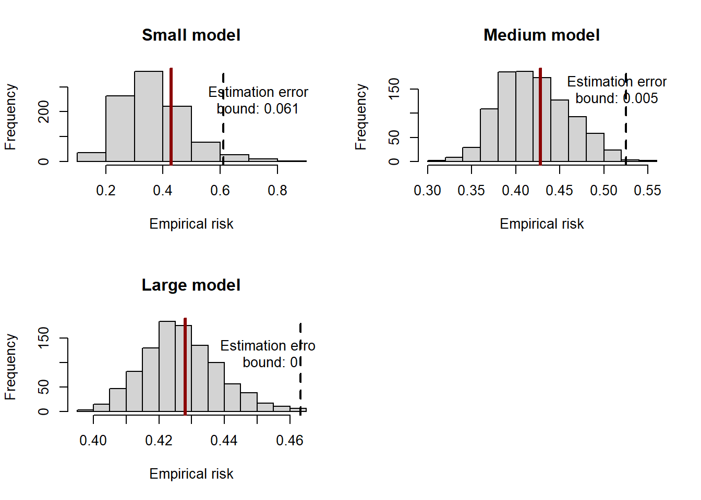
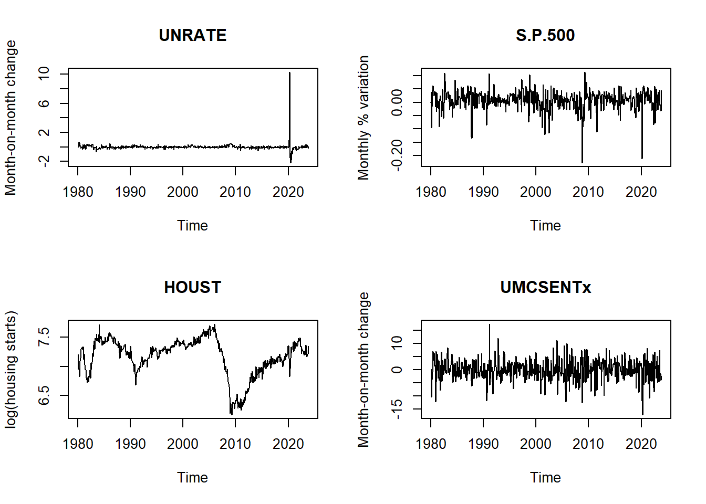
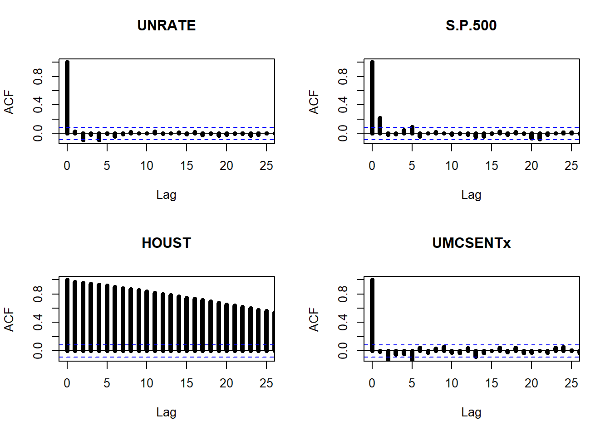
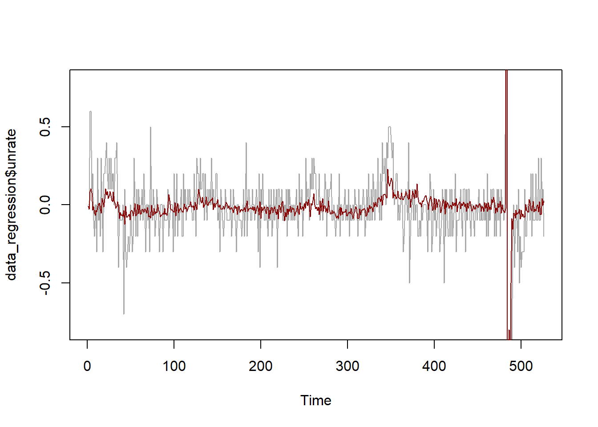
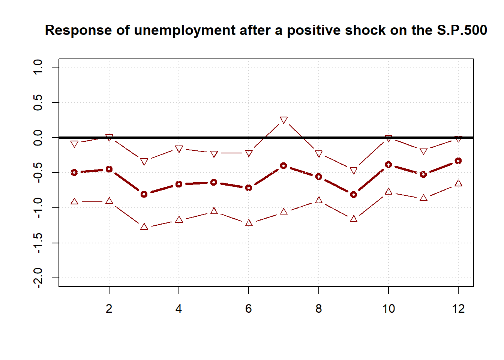
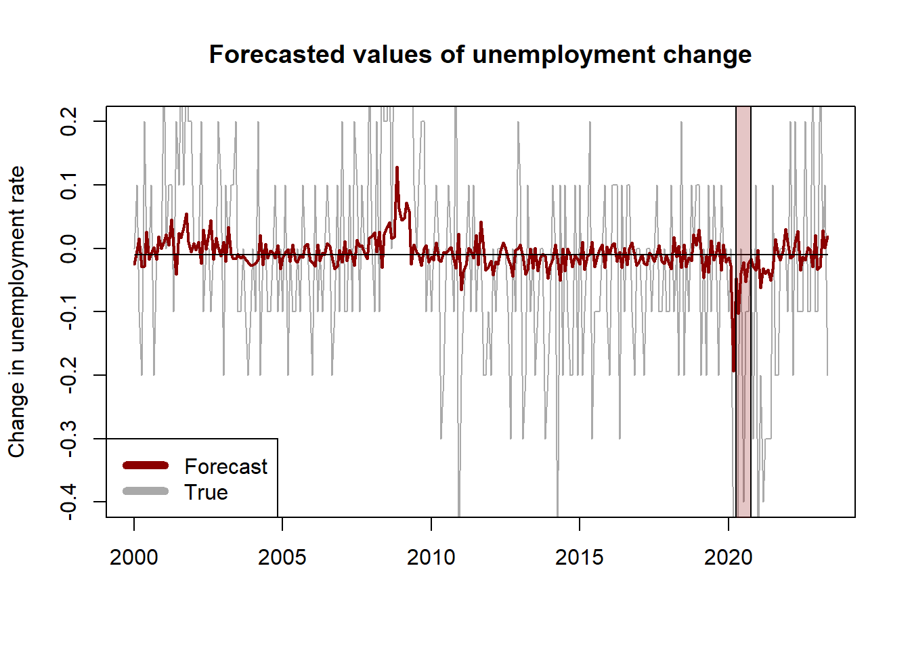

Session 2 Forecasting with time-series regression
This session covers a first introduction to forecasting the conditional mean of a time series. A forecasting procedure involves three main objects:
- A set of predictors and a target variable that we want to forecast
- A class of forecasting models that we consider
- A loss function to evaluate the accuracy of the forecasts
In this session we focus on the class of linear regression models estimated via least-squares. The loss function that we consider throughout this chapter is the quadratic loss function estimated using the Mean Squared Error (MSE) defined in the R function below.
The first section presents a simulation exercise to show the finite-sample properties of the linear regression model under mis-specification. The second section is an empirical application to the problem of forecasting the U.S. unemployment rate using some relevant macroeconomic indicators.
2.1 Oracle inequality
Optional section, not covered in class
Given a forecasting problem, the optimal prediction rule is defined as the one that minimizes the theoretical risk: \[ f_{t+h|t}^* = \arg\min_{f \in \mathcal{F}} R(f_{t+h|t}) \]
and the associated optimal risk is denoted by \(R^*\). Under the square loss function, the optimal rule is the conditional expectation:
\[ f_{t+h|t}^* = \mathbb{E}[y_{t+h}| x_t] \]
Notice that the exact functional form of the predictor is unknown: the conditional expected value could be of any linear or non-linear form. To make the theory of learning operational, we then have to restrict our attention to a class of prediction rules and pick the best rule from that class according to the limited amount of data available.
A commonly used class of predictors is that of the linear predictors. Consider a linear regression model for predicting the target variable \(y_{t+h}\): \[ f_{t+h|t} = x_t'\theta. \]
where \(f_{t+h|t}\) denotes the \(h\)-periods-ahead forecast. Irrespective of what is the true d.g.p., \(\theta\) is the parameter that leads to the best forecasts within the class of linear regression models
\[ \theta = \arg\min_{\tilde{\theta} \in \mathbb{R}^p} \mathbb{E}[L(y_{t+h}, f_{t+h|t}(\theta))] = R(\theta) \]
However, in practice we can only use a finite sample to learn the parameters of the linear model via empirical risk minimization:
\[ \hat{\theta} = \arg\min_{\theta \in \mathbb{R}^p} R_T(\theta) \]
In our case, \(R_T(\theta) = \frac{1}{T-h-t_w+1}\sum_{t=t_w}^{T-h} (y_{t+h} - f_{t+h|t})^2 = MSE\), where \(t_w\) denotes the initial number of observations used to train the model.
So far, we have introduced three different measures of risk:
- \(R^*\), the risk associated with the theoretical optimal predictor if the true d.g.p. were known
- \(R(\theta)\), the risk associated with the optimal predictor within the parametric class considered for learning
- \(R_T(\hat\theta)\), the empirical risk obtained by minimization of the loss function using the available data sample
The regret (i.e. the difference between the optimal and the empirical risk) can be expressed in a way that links these three quantities: \[ R_T(\hat\theta) - R^* = \underbrace{\left[ R(\theta) - R^* \right]}_{_{\text{Approximation error}}} + \underbrace{\left[R_T(\hat\theta) - R(\theta)\right]}_{\text{Estimation error}} \]
We mainly focus on the estimation error. In particular, we are usually interested in establishing finite-sample, probabilistic bounds to this quantity. These bounds are helpful in assessing, for instance, how many observations a model needs to perform well and how its performance relates to the number of predictors. For linear prediction, the following oracle inequality holds: there exists a constant \(c\) such that
\[ R(\hat\theta) \leq R(\theta) + c \frac{p}{T}, \quad \text{w.p. } 1-1/T \]
The example below shows that the inequality holds in a simulation setting. We generate \(10^6\) observations from the following process:
\[ y_t = 0.6\times y_{t-1} - \tanh(0.3 \times y_{t-1}) + 0.8\times x_{1,t-1} + 0.2 \times x_{2,t-1} - 0.7\times x_{3,t-1} + \varepsilon_t, \]
where \(\varepsilon_t \sim \mathcal{N}(0, 0.5)\) and the variables \(x_{1,t}, x_{2,t}, x_{3,t}\) are drawn independently from a standard normal distribution. We then consider the class of linear regression models,
\[ y_t = \beta_0 + \beta_1 y_{t-1} + \beta_2 x_{1,t-1} + \beta_3 x_{2,t-1} + \beta_3 x_{3,t-1} + u_t \]
Notice that the OLS estimator is the empirical risk minimizer in the case of a square loss. In the simulation setting, we can also obtain \(R(\theta)\) by estimating the parameters of the regression using the entire simulated population. We can then draw many estimates of \(R(\hat\theta)\) by considering different subsamples of the simulated population and estimating the parameters of the model using OLS on the subsample. By doing so, we can simulate the distribution of the empirical risk and compare it against the overall minimum risk within the class of linear estimators to assess the oracle inequality. We repeat the exercise considering different sizes of the subsamples to show that the bound gets tighter as the sample size increases, as it must be for the inequality to have the oracle property.
## Example 1: simulation for oracle inequality
# build the simulated population dataset
N <- 3
T_pop <- 1e5
set.seed(455)
x_pop <- matrix(rnorm((T_pop+1)*N), ncol = N)
y_pop <- rep(0, T_pop)
for (t in 2:(T_pop+1)) {
set.seed(456*t)
# non-linear d.g.p.
y_pop[t] <- 0.6*y_pop[t-1] - tanh(0.3*y_pop[t-1]) +
0.8*x_pop[t-1, 1] + 0.2*x_pop[t-1, 2] -
0.7*x_pop[t-1, 3] + rnorm(1, sd = 0.5)
}
colnames(x_pop) <- paste0("x", 1:N)
# target is y(t+1). predictor is x(t)
d_pop <- as.data.frame(cbind(y = y_pop[2:(T_pop+1)] , x_pop[1:T_pop,] ))# estimate the linear predictor y(t) = x(t-1)'b via OLS
model_pop <- lm(y ~ x1 + x2 + x3, data = d_pop)
summary(model_pop)## estimate the optimal risk and the population risk within the linear family
# optimal
f_optimal <- rep(NA, T_pop+1)
for (t in 1:T_pop) {
f_optimal[t+1] <- 0.6*y_pop[t] - tanh(0.3*y_pop[t]) +
0.8*x_pop[t, 1] + 0.2*x_pop[t, 2] -
0.7*x_pop[t, 3]
}
f_optimal <- f_optimal[-1]
risk_star <- mse(d_pop[,1], f_optimal)
# linear family
risk_pop <- mse(d_pop[,1], predict(model_pop))## Run the simulations to estimate a small-sample model many times
t_small <- 30
t_medium <- 300
t_large <- 3000
nsim <- 1000
empirical_risk <- list(
model_small = rep(NA, nsim),
model_medium = rep(NA, nsim),
model_large = rep(NA, nsim)
)
for (s in 1:nsim) {
set.seed(456*s)
# pick index at random between 1e5 and 9e5
idx <- sample(1:(T_pop-t_large), 1)
# consider the t subsequent observations
d_small <- d_pop[idx:(idx+t_small), ]
d_medium <- d_pop[idx:(idx+t_medium),]
d_large <- d_pop[idx:(idx+t_large), ]
# estimate the model
model_small <- lm(y ~ x1 + x2 + x3, data = d_small)
model_medium <- lm(y ~ x1 + x2 + x3, data = d_medium)
model_large <- lm(y ~ x1 + x2 + x3, data = d_large)
# compute the MSE and store the results
empirical_risk$model_small[s] <- mse(d_small[,1], predict(model_small))
empirical_risk$model_medium[s] <- mse(d_medium[,1], predict(model_medium))
empirical_risk$model_large[s] <- mse(d_large[,1], predict(model_large))
}
# compute the constant C s.t. the bound risk_pop + C(P/t) is satisfied
# 1-1/t fraction of times
c_small <- quantile(empirical_risk$model_small, 1-1/t_small)
c_medium <- quantile(empirical_risk$model_medium, 1-1/t_medium)
c_large <- quantile(empirical_risk$model_large, 1-1/t_large)## report the distribution of the simulated empirical risks
par(mfrow = c(2,2))
# small
hist(empirical_risk$model_small, xlab = "Empirical risk", main = "Small model")
abline(v = c_small, lwd = 2, lty = 2)
abline(v = risk_pop, lwd = 3, lty = 1, col = "darkred")
text(x = c_small*1.2, y = 250, labels = paste0("Estimation error\nbound: ",
round(c_small*N/t_small,3)))
# medium
hist(empirical_risk$model_medium, xlab = "Empirical risk", main = "Medium model")
abline(v = c_medium, lwd = 2, lty = 2)
abline(v = risk_pop, lwd = 3, lty = 1, col = "darkred")
text(x = c_medium*0.98, y = 150, labels = paste0("Estimation error\nbound: ",
round(c_medium*N/t_medium,3)))
# large
hist(empirical_risk$model_large, xlab = "Empirical risk", main = "Large model")
abline(v = c_large, lwd = 2, lty = 2)
abline(v = risk_pop, lwd = 3, lty = 1, col = "darkred")
text(x = c_large*0.98, y = 120, labels = paste0("Estimation error\nbound: ",
round(c_large*N/t_large,3)))
2.2 Application: forecasting unemployment
library(sandwich) # for estimation of robust standard errors
library(lmtest) # for coeftest
library(forecast) # for dm.testWe now consider an empirical application using the U.S. data from the FRED-MD dataset, a collection of 127 macroeconomic time series observed at a monthly frequency.
To make sure that the series in the model are stationary, we transform the variables according to the recommendation of the authors, as summarised in the transformation code tcode in the first row of the dataset:
tcode |
Transformation |
|---|---|
| 1 | No |
| 2 | \(\Delta x_t\) |
| 3 | \(\Delta^2 x_t\) |
| 4 | \(\log(x_t)\) |
| 5 | \(\Delta\log(x_t)\) |
| 6 | \(\Delta^2\log(x_t)\) |
| 7 | \(\Delta\left(\frac{x_t}{x_{t-1}} -1 \right)\) |
## load FRED-MD data
fredmd <- read.csv("../data/current.csv")
dates <- as.Date(fredmd$sasdate[-1],'%m/%d/%Y')
tcodes <- fredmd[1,-1]
d <- fredmd[-1,-1]
# subset 1980-2024 period
data <- d[dates >= '1980-01-01', ]
dates <- dates[dates >= '1980-01-01']
t_max <- length(dates)
# choose variables
target <- "UNRATE"
predictors <- c('S.P.500','HOUST','UMCSENTx')
vars <- c(target, predictors)
data <- data[, vars]
tcodes <- tcodes[, vars]## list of functions for transformation
transform_fredmd <- list(
function(x) x,
function(x) c(0, diff(x)),
function(x) c(0, 0, diff(x, differences = 2)),
function(x) log(x),
function(x) c(0, diff(log(x))),
function(x) c(0, 0, diff(log(x), differences = 2)),
function(x) c(0, 0, diff( x[2:length(x)]/x[1:(length(x)-1)] - 1))
)## save the transformed series separately
unrate <- transform_fredmd[[tcodes$UNRATE]](data$UNRATE)
sp500 <- transform_fredmd[[tcodes$S.P.500]](data$S.P.500)
house <- transform_fredmd[[tcodes$HOUST]](data$HOUST)
sent <- transform_fredmd[[tcodes$UMCSENTx]](data$UMCSENTx)# plot
par(mfrow = c(2,2))
plot.ts(ts(unrate, start = c(1980, 1), freq = 12), main = "UNRATE", ylab = "Month-on-month change")
plot.ts(ts(sp500, start = c(1980, 1), freq = 12), main = "S.P.500", ylab = "Monthly % variation")
plot.ts(ts(house, start = c(1980, 1), freq = 12), main = "HOUST", ylab = "log(housing starts)")
plot.ts(ts(sent, start = c(1980, 1), freq = 12), main = "UMCSENTx", ylab = "Month-on-month change")
We can have a look to the autocorrelation properties of the series.
## ACF plot
par(mfrow = c(2,2))
acf(unrate, ylim=c(-0.1,1), lwd=5, xlim=c(0,25), main='UNRATE')
acf(sp500, ylim=c(-0.1,1), lwd=5, xlim=c(0,25), main='S.P.500')
acf(house, ylim=c(-0.1,1), lwd=5, xlim=c(0,25), main='HOUST')
acf(sent, ylim=c(-0.1,1), lwd=5, xlim=c(0,25), main='UMCSENTx')
We now study some in-sample properties of the predictive regression:
\[ \begin{aligned} \text{UNRATE}_t &= \beta_0 + \beta_1 \ \text{UNRATE}_{t-1} + \beta_2 \ \text{HOUST}_{t-1} \ + \beta_3 \ \text{SP500}_{t-1} \ + \beta_4 \ \text{SENT}_{t-1} \ +\\ &+ \ \text{dummies} \ + \varepsilon_t. \end{aligned} \]
In particular, we compute the in-sample predictive fit of the model and we study the properties of the residuals.
## Fit predictive regression
# Create the dataframe for regression
data_regression <- data.frame(
unrate = unrate[2:t_max],
unrate_lag = unrate[1:(t_max-1)],
house = house[1:(t_max-1)],
sp500 = sp500[1:(t_max-1)],
sent = sent[1:(t_max-1)],
d1 = (dates[2:t_max]=="2020-04-01")*1, # covid dummy variable
d2 = (dates[2:t_max]=="2020-05-01")*1,
d3 = (dates[2:t_max]=="2020-06-01")*1,
d4 = (dates[2:t_max]=="2020-07-01")*1,
d5 = (dates[2:t_max]=="2020-08-01")*1,
d6 = (dates[2:t_max]=="2020-09-01")*1
)
# Fit OLS
pred_model <- lm(unrate ~ ., data = data_regression)
vcov_nw <- NeweyWest(pred_model, prewhite=F)
# BAD inference (unadjusted asymptotic variance)
coeftest(pred_model)##
## t test of coefficients:
##
## Estimate Std. Error t value Pr(>|t|)
## (Intercept) 0.6066299 0.1752768 3.4610 0.0005829 ***
## unrate_lag 0.1241838 0.0445711 2.7862 0.0055298 **
## house -0.0854805 0.0244385 -3.4978 0.0005097 ***
## sp500 -0.4989494 0.2318030 -2.1525 0.0318242 *
## sent -0.0021749 0.0020826 -1.0443 0.2968167
## d1 10.0608718 0.1859894 54.0938 < 2.2e-16 ***
## d2 -2.8193347 0.4924891 -5.7247 1.762e-08 ***
## d3 -1.9965983 0.1882808 -10.6044 < 2.2e-16 ***
## d4 -0.4795102 0.2010676 -2.3848 0.0174483 *
## d5 -1.6764097 0.1795464 -9.3369 < 2.2e-16 ***
## d6 -0.2339512 0.1927566 -1.2137 0.2254137
## ---
## Signif. codes: 0 '***' 0.001 '**' 0.01 '*' 0.05 '.' 0.1 ' ' 1##
## t test of coefficients:
##
## Estimate Std. Error t value Pr(>|t|)
## (Intercept) 0.6066299 0.3400340 1.7840 0.07501 .
## unrate_lag 0.1241838 0.0686069 1.8101 0.07087 .
## house -0.0854805 0.0464922 -1.8386 0.06655 .
## sp500 -0.4989494 0.2553605 -1.9539 0.05125 .
## sent -0.0021749 0.0024861 -0.8748 0.38207
## d1 10.0608718 0.0970859 103.6286 < 2.2e-16 ***
## d2 -2.8193347 0.7159484 -3.9379 9.351e-05 ***
## d3 -1.9965983 0.1022064 -19.5350 < 2.2e-16 ***
## d4 -0.4795102 0.1528230 -3.1377 0.00180 **
## d5 -1.6764097 0.0584554 -28.6785 < 2.2e-16 ***
## d6 -0.2339512 0.1251049 -1.8700 0.06205 .
## ---
## Signif. codes: 0 '***' 0.001 '**' 0.01 '*' 0.05 '.' 0.1 ' ' 1# True VS. predicted values
plot.ts(data_regression$unrate, ylim = c(-0.8, 0.8), col = "darkgrey")
lines(predict(pred_model), col = "darkred")
##
## Box-Pierce test
##
## data: pred_model$residuals
## X-squared = 76.202, df = 12, p-value = 2.176e-11We can assess the effect of an exogenous change in the predictors on the target variable over time by using the method of local projections. Here we show the effect of a positive shock in the S.P.500 index.
## Local projections for assessing the impact of a shock
# set number of horizons and initialize objects
H <- 12
lp <- rep(0,H) # local projection
lp_confint <- matrix(0,H,2) # confidence intervals
# compute the impact after h = 1,...,H horizons
for(h in 1:H){
# prepare dataset for forecasting h periods ahead
data_h <- cbind(
data_regression[h:t_max, c("unrate", paste0("d", 1:6))],
data_regression[1:(t_max-h+1), c("unrate_lag", "house", "sp500", "sent")]
)
# predict
pred_model_h <- lm(unrate ~ ., data = data_h)
# compute Newey-West estimate
vcov_nw_h <- NeweyWest(pred_model_h, prewhite = F)
# compute standard errors for the estimated coefficients
confint_h <- coeftest(pred_model_h, vcov_nw_h)
# store the estimates and the 90% confidence intervals
lp[h] <- confint_h['sp500','Estimate']
lp_confint[h, ] <- lp[h] + confint_h['sp500','Std. Error']*c(-1,1)*qnorm(0.05)
}## Plot the impulse response function
plot(1:H, lp, lwd = 3, col = 'darkred', t = "b", ylim = c(-2,1),
main = "Response of unemployment after a positive shock on the S.P.500",
xlab = "", ylab = "")
lines(lp_confint[,1], lwd = 1, col = 'darkred', t = "b", pch = 25)
lines(lp_confint[,2], lwd = 1, col = 'darkred', t = "b", pch = 24)
grid()
box()
abline(h=0,lwd=3)
We now proceed to evaluate the forecasts of the model. To do so, we split the data into a training set (observations up to 1999:12) and a testing set (starting in 2000:01). We estimate the parameters of the model on the training data and then make predictions based on the value of the predictors and the estimated coefficients. We compare the forecasts against the sample mean using the MSE. The Diebold-Mariano test suggests that the regression method has a superior forecasting performance than the sample mean. However, this result depends on the specification of the regression model and the predictive ability of the model is still pretty poor.
## Forecast evaluation
# split training set (1980-2000) and testing set (2000-2024)
in_sample <- (dates[2:t_max] < as.Date('2000-01-01'))
out_sample <- (dates[2:t_max] >= as.Date('2000-01-01') &
( dates[2:t_max] < as.Date('2020-03-01') |
dates[2:t_max] >= as.Date('2020-09-01') ))
data_train <- data_regression[in_sample,]
data_test <- data_regression[out_sample,]
dates_test <- (dates[2:t_max])[out_sample]
# fit predictive models
model1 <- lm(unrate ~ unrate_lag + sp500 + sent + house, data = data_train)
model2 <- lm(unrate ~ unrate_lag + sp500 + sent, data = data_train)
model3 <- lm(unrate ~ unrate_lag + sp500, data = data_train)
# get predictions
y_hat1 <- predict(model1, newdata = data_test)
y_hat2 <- predict(model2, newdata = data_test)
y_hat3 <- predict(model3, newdata = data_test)
# compute benchmark prediction (sample mean)
y_benchmark <- rep(mean(data_train$unrate), sum(out_sample))
# compute MSE
mse_model1 <- mse(data_test$unrate, y_hat1)
mse_model2 <- mse(data_test$unrate, y_hat2)
mse_model3 <- mse(data_test$unrate, y_hat3)
mse_benchmark <- mse(data_test$unrate, y_benchmark)
# results
round(rbind(
mse_4vars = mse_model1,
mse_3vars = mse_model2,
mse_2vars = mse_model3,
mse_mean = mse_benchmark,
R2_2vars = 1 - mse_model3/mse_benchmark
), 4)## [,1]
## mse_4vars 0.0536
## mse_3vars 0.0302
## mse_2vars 0.0296
## mse_mean 0.0318
## R2_2vars 0.0677# convert to ts object to have dates in plot
y_true <- ts(data_test$unrate, start = c(2000, 1), frequency = 12)
y_hat3 <- ts(y_hat3, start = c(2000, 1), frequency = 12)
y_benchmark <- ts(y_benchmark, start = c(2000, 1), frequency = 12)
# plot
plot.ts(y_true, col = "darkgrey", ylim = c(-0.4, 0.2),
main = "Forecasted values of unemployment change",
ylab = "Change in unemployment rate",
xlab = "")
lines(y_hat3, col = "darkred", lwd = 2)
lines(y_benchmark)
rect(2020.25,-1,2020.75,1,col = rgb(0.6,0.1,0.1,1/4))
legend("bottomleft", c("Forecast", "True"), col=c("darkred", "darkgrey"), lwd=6)
It is common to report the plot of the normalized cumulated squared errors to assess if one model has a superior forecasting ability over all the testing period:
\[ \text{Cumulated error}_t = \frac{\sum_{\tau = t_w + 1}^t e_\tau^2}{\sum_{\tau = t_w + 1}^T \bar{e}_{\tau}^2} \]
where \(e_\tau, \bar{e}_\tau\) denote respectively the forecast error of the model and the benchmark at time \(\tau\), and \(t_w\) is the number of periods in the training set.
## Plot the forecast errors over time
# compute the forecast errors
err_model <- y_true-y_hat3
err_benchmark <- y_true-y_benchmark
# compute the (normalized) cumulated squared errors and convert to ts object
err2_model <- ts(cumsum((err_model)^2), start = c(2000, 1), frequency = 12)
err2_benchmark <- ts(cumsum((err_benchmark)^2), start = c(2000, 1), frequency = 12)
err2_constant <- sum((y_true-y_benchmark)^2)
# plot the cumulated squared errors over time
plot.ts(err2_benchmark/err2_constant, lwd = 2,
ylab = "Cumulated squared errors",
main = "Forecast errors over time",
xlab = "")
lines(err2_model/err2_constant, col = "darkred", lwd = 2)
rect(2020.25,-1,2020.75,1.5,col = rgb(0.6,0.1,0.1,1/4))
legend("topleft", c("Regression model", "Sample mean"), col=c("darkred", "black"), lwd=6)## Diebold-Mariano test for predictive performance
# one-sided test:
# - H0: err_benchmark = err_model
# - H1: err_benchmark > err_model
dm.test(err_benchmark, err_model, alternative = "greater") ##
## Diebold-Mariano Test
##
## data: err_benchmarkerr_model
## DM = 2.4995, Forecast horizon = 1, Loss function power = 2, p-value =
## 0.006504
## alternative hypothesis: greater